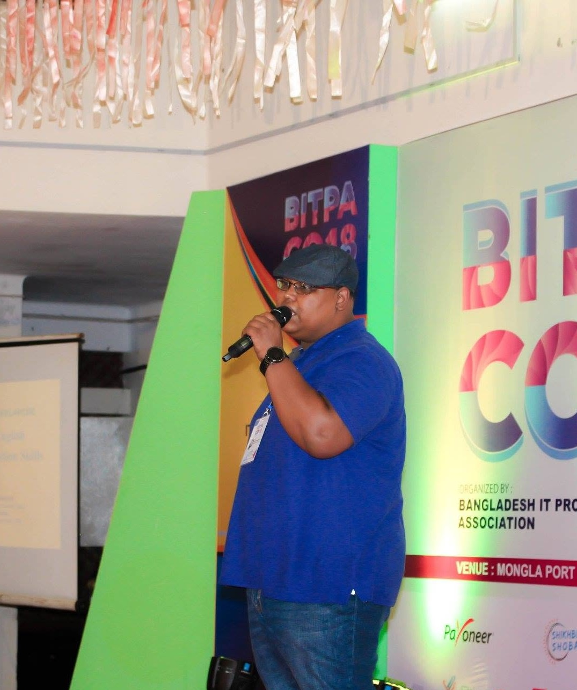

Dr. Nazif brings an evidence-based, deeply practical approach to the skills nobody formally teaches - communication, emotional intelligence, leadership, collaboration, and professional effectiveness. Drawing on his coaching practice at Life Skill School, he turns research and real coaching conversations into a talk your audience can actually use the next day.

Everything shared on stage comes from Dr. Nazif's actual coaching work at Life Skill School - hundreds of hours of real conversations with professionals, students, and newcomers.
Grounded in research from the Carnegie Foundation, LinkedIn's talent research, and the World Economic Forum's Future of Jobs findings - audiences leave with a method, not just a mood.
Simple, memorable tools - like the Headline Method and the CLEAR path for difficult conversations - that turn a keynote into a behaviour change, not just an hour of entertainment.
A medical and public-health background trained in reading people under pressure, paired with an immigrant's lens that resonates with newcomers and diverse, international audiences.
A flagship keynote on soft skill development - why these skills decide careers, relationships, and daily peace of mind, and exactly how to build them. Built as a two-hour lecture with interaction and activities, and easily adapted into a shorter keynote, a conference session, or a hands-on workshop.
Every talk draws on this map - pick one family for a focused session, or the full arc for a keynote.
A focused, high-impact talk (30-60 min) tailored to your event theme and audience.
Expert perspective and discussion within Dr. Nazif's areas of expertise - in person or virtual.
Interactive, hands-on session (2-4 hrs) with practical tools, exercises, and takeaways.
An engaging, authentic conversation (30-60 min) on any topic in his wheelhouse. Virtual.
Informal, conversational format ideal for intimate events or conference breakouts.
Full virtual delivery via your preferred platform - interactive and globally accessible.
Whether it's the full keynote or a single family of skills, share your event details and Dr. Nazif's team will take it from there.
Start your booking